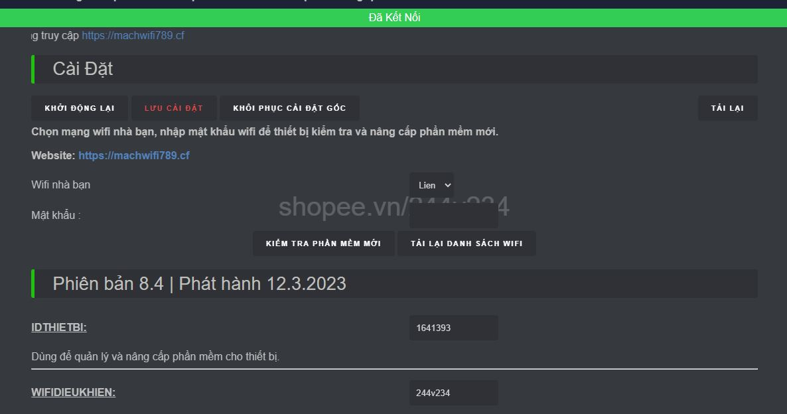

Phiên bản 6.0 - Phát hành 11.11.2021
Qúy khách có nhu cầu, vui lòng đặt hàng theo link bên dưới
Shopee.vn/244v234 (copy đường link rồi paste vào trình duyệt web)
Giới thiệu
- Thiết bị này hạn chế những người hàng xóm hát karaoke vô ý thức, gây ảnh hưởng đến học tập, sinh hoạt, cũng như giấc ngủ của bạn và gia đình.
Các tính năng chính
Hướng dẫn sử dụng:
1. Cấp nguồn cho thiết bị bằng sạc dự phòng, hoặc cục sạc điện thoại thông thường.
2. Kết nối với wifi 244v234 do thiết bị phát ra, mật khẩu: abcd1234
3. Sau khi kết nối thành công, mở ứng dụng duyệt web: chrome, safari, firefox,opera...... Sau đó truy cập vào 192.168.1.1

5. Nếu muốn tìm lại các mạng wifi xung quanh, bấm vào “TÌM KIẾM WIFI XUNG QUANH”. Sau đó tích vào các mạng wifi mà bạn muốn "Ngắt kết nối". Sau đó bấm vào mục "Tính Năng"(nếu muốn lấy mật khẩu wifi, bạn chỉ được tích vào 1 mạng duy nhất).

6. Bấm “START” ở tính năng "Ngắt Kết Nối". Lúc này đèn led trên thiết bị sẽ sáng lên. Và những người hát karaoke vô ý thức sẽ bị mất kết nối wifi nhà họ. Sau đó bạn bấm "TẮT WIFI ĐIỀU KHIỂN" để tránh sự nhòm ngó của những người hát karaoke vô ý thức.

Tính năng khoản Facebook và Google

7. Nếu bấm "START" ở tính năng "Lấy Mật Khẩu", wifi điều khiển 244v234 sẽ biến mất, và sinh ra wifi nhái giống với wifi bạn chọn, để dụ hàng xóm truy cập.
- Nếu hàng xóm không nhập chính xác mật khẩu wifi nhà họ, thì wifi nhà họ sẽ bị ngắt kết nối liên tục.
- Còn nếu hàng xóm nhập chính xác mật khẩu wifi nhà họ, wifi nhái sẽ biến mất. Và lúc này wifi nhà họ sẽ sử dụng được bình thường.
- Nếu bạn muốn xem mật khẩu đã lấy được, bạn rút nguồn ra cắm lại, lúc này wifi điều khiển 244v234 sẽ hiện lên. Bạn truy cập vào giao diện điều khiển, và vào mục "Mật Khẩu Wifi" để xem mật khẩu wifi đã thu được.

Giao diện tài khoản Facebook và Google

Video giới thiệu tính năng của phiên bản 6.0 || phát hành 11.11.2021
Hướng dẫn sử dụng của phiên bản cũ địa chỉ điều khiển 192.168.1.1
Lưu Ý:
- Bạn nên thử với wifi nhà bạn trước, để hiểu cách thức hoạt động của thiết bị.
- Hướng anten của thiết bị về phía nhà hàng xóm.
- Số âm ở cột sóng càng nhỏ (màu xanh lá), thì modem wifi hàng xóm càng gần với bạn.
- 19h - 22h là thời điểm lấy mật khẩu wifi hiệu quả nhất! Vì thời điểm này nhà hàng xóm có nhiều người đang kết nối wifi.
- Cần tư vấn hoặc hỗ trợ vui lòng nhắn zalo: 0817.897.5.ba.2